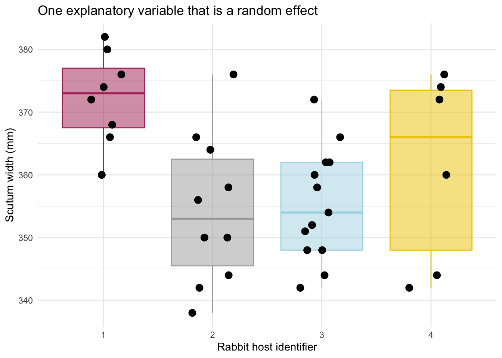
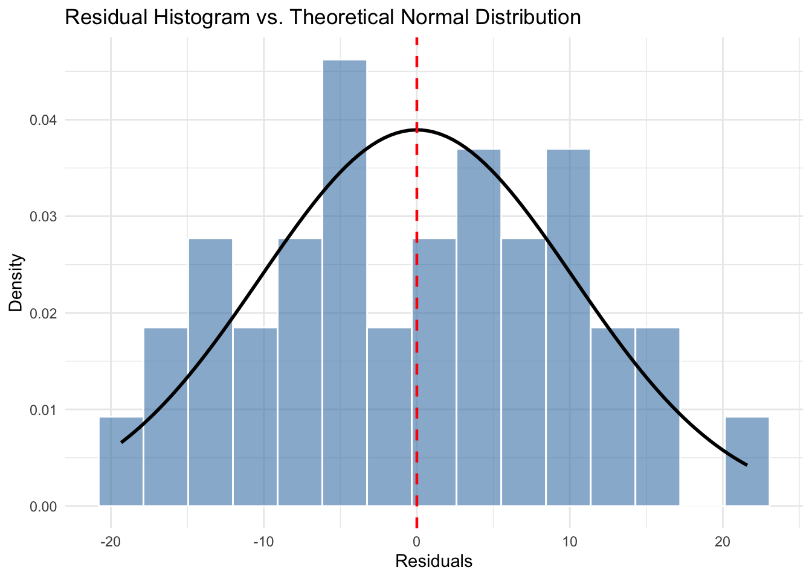

20 Mon Oct 26 - One-way ANOVA with random effects.
This lecture is based on Chapter 10.4 of Dr. Schneider’s notes.
We have mentioned random versus fixed effects a few times in class already. Today we will do an example of an analysis involving one explanatory variable that is a random effect.
A Random factor categories that are considered a sample from some larger population of units, such as plots or fields in an agricultural experiment. A fixed factor has levels that are the only ones of interest, as in the analysis of sleep data in relation to drug.
With a fixed factor we are inferring only to the levels at hand. With a random factor we assume that the levels are a sample from a larger population of levels or units, which vary. With a random factor we infer to a larger population of levels or units that might have been chosen.
We often do not seek to test hypothesis involving explanatory variables that are random effects. Instead, we aim to quantify how much of the variation in the response variable is explained by the random effect.
The choice between random and fixed depends on how we define the population.
Example. A biologist carries out an experiment on the effects of nutrient enrichment on the growth of marine algae, at three different intertidal locations.Then repeats the experiment two more times, so that each location is exposed to each nutrient level on all three occasions.
The nutrient factor is clearly fixed.
The location factor is usually random. However, the location factor could be taken as fixed, if the biologist had chosen the locations to represent the fixed types of possible conditions in the study area (i.e., low, medium and high turbidity).
The three occasions can also be taken as either random or fixed. They would be random if a known source of temporal variation, such as season and time of day, were selected at random. They become fixed if occasions where deliberated selected to differ with respect to a known source of temporal variation (i.e., sunrise, midday, sunset).
20.1 Tick widths on rabbit hosts: one explanatory varaible (rabbit), which is a random effect.
Tick widths are measured on 4 different rabbits. Our question of interest is:
- Does the variance in width size among hosts (rabbits) exceed variance within hosts?
Our formal model is:
\[ W = \beta_0 + \beta_H H + \epsilon \]
where \(W\) is the width of the ticks in mm, \(\beta_0\) is the grand mean of tick width (mm), \(\beta_H\) is the mean width of ticks on each rabbit host relatve to the grand mean (mm), \(H\) is an indicator variable corresponding to each of the four rabbits, and \(\epsilon\) are normally distributed errors.
Dr. Schneider has a note that it is nice to use arabic letters, such as \(H\), for random effects and greek letters, such as \(\alpha\), for fixed effects.
Let’s load and visualize the tick data:
tick.data=read.csv("https://raw.githubusercontent.com/ahurford/biol-4605-data/refs/heads/main/data/tick-width.csv")
tick.data## Wscut HostNumber Host
## 1 380 1 A
## 2 376 1 A
## 3 360 1 A
## 4 368 1 A
## 5 372 1 A
## 6 366 1 A
## 7 374 1 A
## 8 382 1 A
## 9 350 2 B
## 10 356 2 B
## 11 358 2 B
## 12 376 2 B
## 13 338 2 B
## 14 342 2 B
## 15 366 2 B
## 16 350 2 B
## 17 344 2 B
## 18 364 2 B
## 19 354 3 C
## 20 360 3 C
## 21 362 3 C
## 22 352 3 C
## 23 366 3 C
## 24 372 3 C
## 25 362 3 C
## 26 344 3 C
## 27 342 3 C
## 28 358 3 C
## 29 351 3 C
## 30 348 3 C
## 31 348 3 C
## 32 376 4 D
## 33 344 4 D
## 34 342 4 D
## 35 372 4 D
## 36 374 4 D
## 37 360 4 DThe column “Host” (as a letter) ensures that R treats the rabbit identifier as categorical. Another option is to ask R to treat the host number column as.character(). In the above data, R is treating host number as an integer, and integers are numbers, so if we do not make it clear that HostNumber should be treated as a category, R might treat it as counts or ranks.
I want the response variable (Wscut) to remain as an integer, so that we can have a numeric response variable.
Here is a way we can do that:
## Wscut HostNumber Host
## 1 380 1 A
## 2 376 1 A
## 3 360 1 A
## 4 368 1 A
## 5 372 1 A
## 6 366 1 A
## 7 374 1 A
## 8 382 1 A
## 9 350 2 B
## 10 356 2 B
## 11 358 2 B
## 12 376 2 B
## 13 338 2 B
## 14 342 2 B
## 15 366 2 B
## 16 350 2 B
## 17 344 2 B
## 18 364 2 B
## 19 354 3 C
## 20 360 3 C
## 21 362 3 C
## 22 352 3 C
## 23 366 3 C
## 24 372 3 C
## 25 362 3 C
## 26 344 3 C
## 27 342 3 C
## 28 358 3 C
## 29 351 3 C
## 30 348 3 C
## 31 348 3 C
## 32 376 4 D
## 33 344 4 D
## 34 342 4 D
## 35 372 4 D
## 36 374 4 D
## 37 360 4 DThe print out of the data shows that HostNumber is changed to a character, so that it will be treated as a category in the analysis. We also have the column Host, which we can always use to check that there has not been a mistake in treating HostNumber as a rank or integer.
Let’s visualize the tick data:
library(ggplot2)
ggplot(tick.data, aes(x = factor(HostNumber), y = Wscut)) +
# 1. Add the box plot layer
geom_boxplot(
outlier.shape = NA, # CRITICAL: Prevents duplicate plotting of outliers
fill = c("maroon", "darkgray", "lightblue", "gold2"),
color = c("maroon", "darkgray", "lightblue", "gold2"), # Memorial colours
alpha = 0.5 # some transparency so we can still read the plot
) +
# 2. Add the strip plot (jittered points) layer
geom_jitter(
position = position_jitter(width = 0.2, height = 0), # Controls data spreading
color = "black", # Pick a distinct color for raw data points
size = 3, # Modify point size
) +
labs(
x = "Rabbit host identifier",
y = "Scutum width (mm)",
title = "One explanatory variable that is a random effect"
)+theme_minimal()
Based on this plot, it looks like some of the variation in tick width is explained by which rabbit they are on, particularly as the widest ticks seems to be found of rabbit 1.
We can inspect the normality of our residuals:
tick.model = lm(Wscut~HostNumber, data = tick.data) # This treats HostNumber as a fixed effect (when we check our assumptions by plotting the residuals)
tick.data$residuals <- residuals(tick.model)
# Plot using density instead of count
ggplot(tick.data, aes(x = residuals)) +
# after_stat(density) normalizes the bars so the curve fits the y-axis scale
geom_histogram(aes(y = after_stat(density)), bins = 15,
fill = "steelblue", color = "white", alpha = 0.6) +
# Layer a theoretical normal curve over the overall residuals data
stat_function(
fun = dnorm,
args = list(mean = 0, sd = sd(tick.data$residuals)),
color = "black",
linewidth = 1
) +
geom_vline(xintercept = 0, linetype = "dashed", color = "red", linewidth = 0.8) +
labs(
title = "Residual Histogram vs. Theoretical Normal Distribution",
x = "Residuals",
y = "Density"
) +
theme_minimal()
It looks like the residuals are quite normally-distributed.
20.1.1 Execute the analysis
To perform an analysis with random effects, we need to load a specific package lme4. You can do this using the install.package() command (or see the Quantitative training guide).
require(lme4)
# fit the random effects model
mod = lmer(Wscut~1|HostNumber,data = tick.data)
# view summary
summary(mod)## Linear mixed model fit by REML ['lmerMod']
## Formula: Wscut ~ 1 | HostNumber
## Data: tick.data
##
## REML criterion at convergence: 281.4
##
## Scaled residuals:
## Min 1Q Median 3Q Max
## -1.7904 -0.7518 0.0493 0.7972 1.9190
##
## Random effects:
## Groups Name Variance Std.Dev.
## HostNumber (Intercept) 55.01 7.417
## Residual 114.42 10.697
## Number of obs: 37, groups: HostNumber, 4
##
## Fixed effects:
## Estimate Std. Error t value
## (Intercept) 360.630 4.129 87.33From this output we see that the variance explained by the host is 55.01 mm\(^2\) and the unexplained variance (in the residual) is 114.42 mm\(^2\).
Therefore, as the only explanatory variable is the random effect associated with each rabbit, the variation between hosts is the residual variance. Therefore, we find that the variation between rabbits (114.42 mm\(^2\)) is greater than the variation within rabbits (55.01 mm\(^2\)) and that 55.01/(114.42 + 55.01) = 32.5\(\%\) of the variation is due to the ticks being associated with particular rabbits.
20.3 Readings
- Chapter 10.4 of Dr. Schneider’s notes.